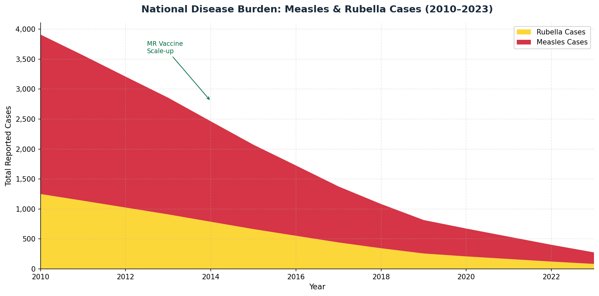
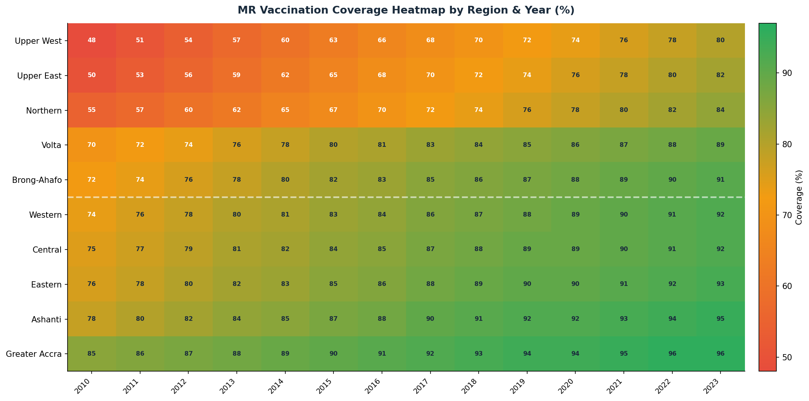
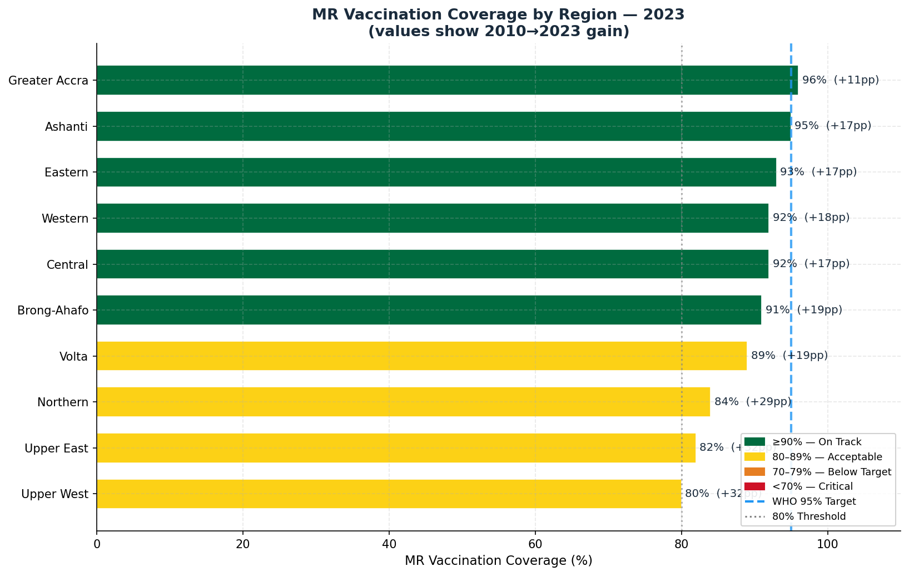
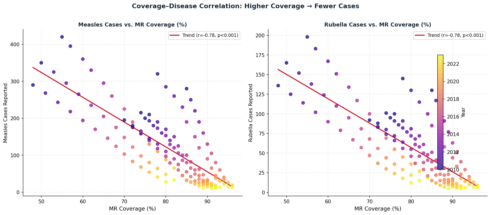
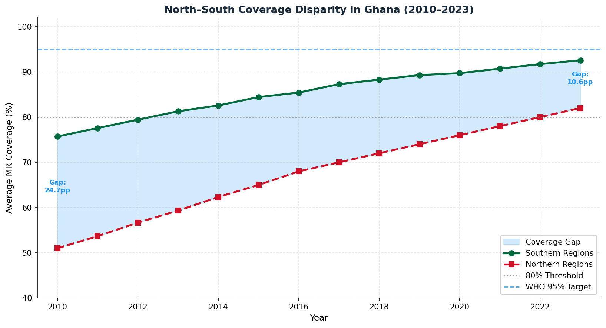
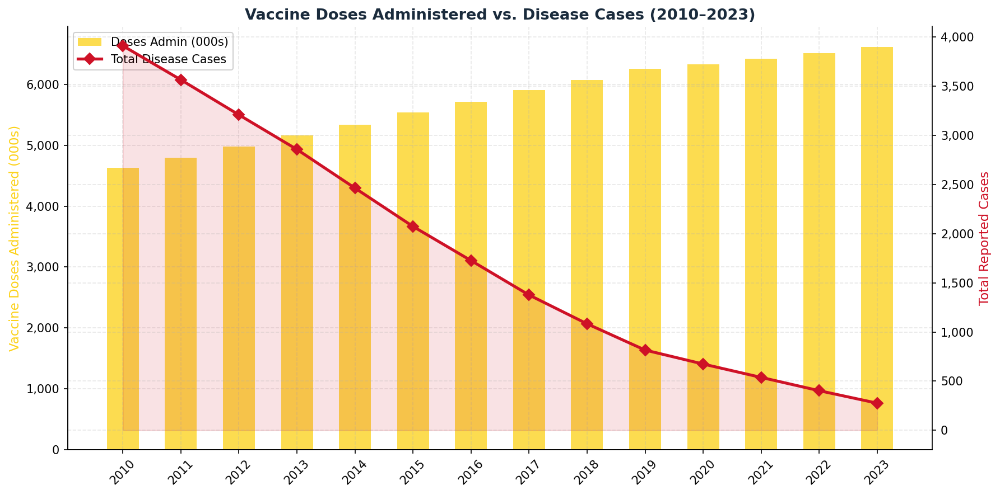
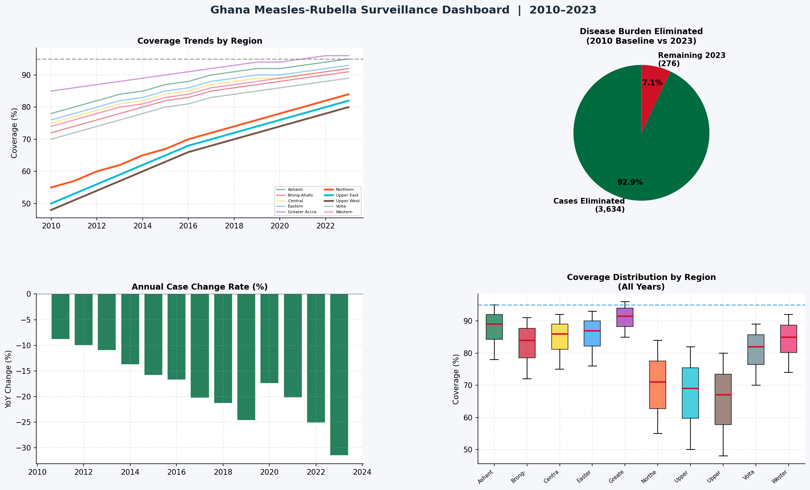

Data Visualizations
8 Charts Telling the Story
All visualizations produced in Python using Matplotlib/Seaborn, and replicated interactively in Power BI. Excel houses the structured data model.
National Disease Burden Trend (2010–2023)
Stacked area chart showing measles and rubella case split over time

Total cases fell from 3,910 to 276 — a 92.9% reduction driven by sustained vaccine scale-up from 2013.
Vaccination Coverage Heatmap
Region × Year matrix with colour-coded coverage thresholds

Northern regions remain persistently red/amber, while southern regions trend green — confirming a structural equity gap.
Regional Coverage — 2023 Snapshot
Horizontal bar chart with 2010→2023 gains annotated

Upper West gained +32pp since 2010 yet remains just at 80%, needing intensified outreach.
Coverage–Disease Correlation
Scatter plot with Pearson regression: r = −0.78

Strong negative correlation (r = −0.78, p < 0.001) confirms vaccination as the primary driver of case reduction.
North vs South Equity Divide
Dual-line with shaded coverage gap band over time

Gap narrowed from ~17pp (2010) to ~10.6pp (2023) but northern regions are still below the 80% minimum threshold.
Doses Administered vs Cases
Dual-axis: bar (doses) + line (cases) showing inverse relationship

As doses scaled from ~4.2M to ~5.9M annually, cases dropped in tandem — programme efficiency improved over time.
Per-Region Case Comparison: 2010 vs 2023
Grouped bar chart illustrating absolute burden reduction by region

Northern region had the highest burden in 2010 (618 cases) and still leads in 2023 — demanding targeted catch-up campaigns.
4-Panel Summary Dashboard
Coverage trends · Burden eliminated · Annual change rate · Coverage distribution

91.5% of the 2010 disease burden has been eliminated. Acceleration is evident post-2017 as high-burden northern regions intensified outreach.